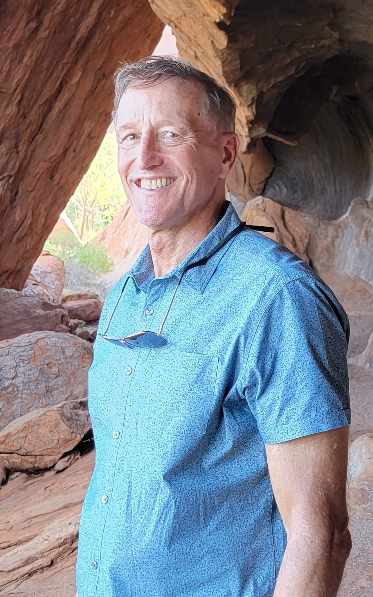

One day he decided that they should have a deck up in the trees to catch the shade. Less than a week later this picture was taken.The family spends summers in Michigan, in the same neighborhood he spent time in as a child.He enjoys fishing, especially when you have a dock rout outside.Working on an aforementioned project.

He has spent a lot of time in Australia, and even visited the big rock.He occasionally will spend time around the science still.